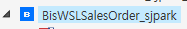
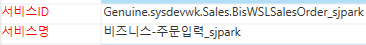
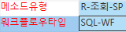
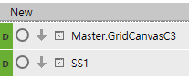
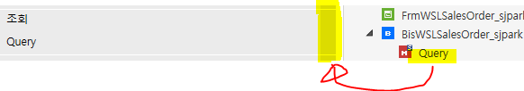
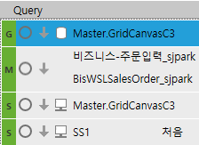
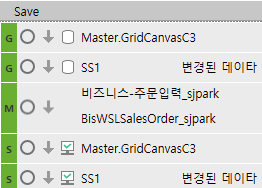
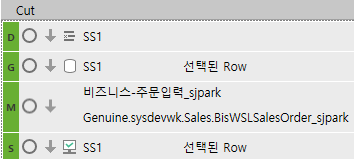
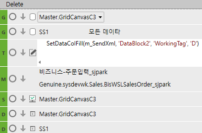

3. 서비스 틀, 이벤트 처리 (개발툴)
* 기능 만들기
새 비즈니스 서비스 – 조회+저장


- 서비스ID
Genuine . sysdev wk . Sales . Bis WSL Sales Order_sjpark
== wk = 사이트명
* 비즈니스 서비스 내의 메소드 종류
1. Query – 조회용

메소드 유형 : R-조회-SP를 많이 쓴다 (Q조회는 거의 안씀)
워크플로우 타입
-- SQL-WF : 비즈니스 서비스에서 바로 SP로 연결
-- K-WF : Genuine 방식 (신규 말고 수정할 때 종종 사용)
SP와 직접 연결 x => 데이터를 한번 더 거침
2. Save - 저장용
=============================================================================
신규 (D) (D)
1. (D), (D) 화면 데이터 제거(마스터, 시트 둘 다) (두 기능)
+. default값만 들어감

조회 (G) (M) (S) (S)
마스터 키값 기준으로 테이블에 있는 데이터를 조회
1. (G) - SP로 갈 때 필요한 데이터를 가져옴
OrderSeq(주문 내부코드) 하나만 있으면 조회가 가능
=> OrderSeq가 있는 master영역을 가져감
2. (M) - 데이터를 챙겼으므로 SP가 작업을 해야 함
=> 메소드의 Query(조회) 가져옴 (오른쪽 끝 회색 배너)

3. (S) - SP에서 작업한 내용을 보여주는 작업
SS1 - 처음
추가 => 기존 조회한 것이 안 지워지고 보여 짐
(거의 안씀)
화면에 있는 데이터를 가지고 SP에서 작업

저장 (G) (G) (M) (S) (S)

1. (G) (G) - 마스터, 시트 각각 1개씩
시트 - 보통 '변경된 데이터'
시트는 조건에 맞는 것만 가져가기 때문
* 변경된 데이터
기존 것 변경 = U
신규 작성 = A
2. (M) - SAVE 메소드 가져오기 (회색영역)
3. (S) - 키값이 있어야 나중에 데이터 업데이트가 가능
모니터 안에 체크 모양 => 저장
모니터 안에 체크 없으면 => 조회
G-S 동일하게 맞춰주기 (변경된 데이타 => 변경된 데이타)
시트삭제 (D) (G) (M) (S)

행삭제 = 화면에서만 안보임
(M) => Save
1. (G) - 선택된 ROW (한줄 통 째로)
(맨 왼쪽 행 헤더를 눌러야한다)
삭제 (G) (G) (T) (M) (S) (D)

** **
- (G) (G)
- master영역, sheet영역 가져오기
2. (T) (M) (M => Save)
- 삭제 작업 수행 (삭제 후 저장)
TextBox - SetDataColFill(m_SendXml, 'DataBlock2', 'WorkingTag', 'D')
데이터마다 자동으로 WorkingTag가 하나씩 있다
SendXml 이란 형식으로 넘어간다